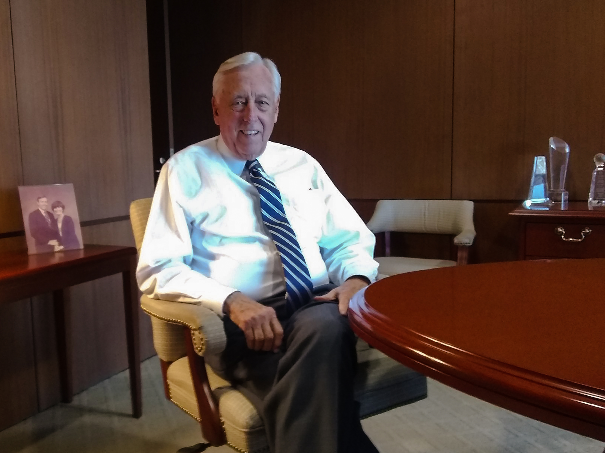
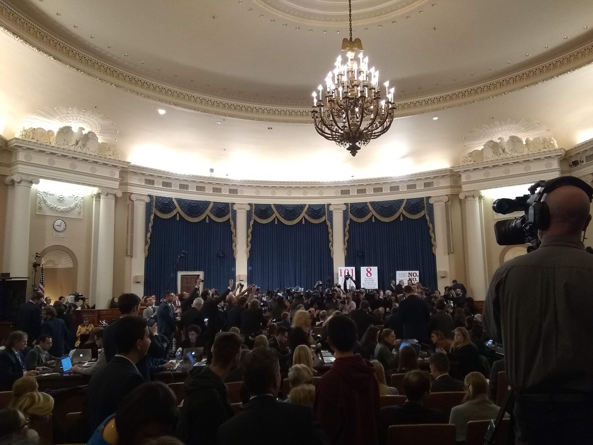
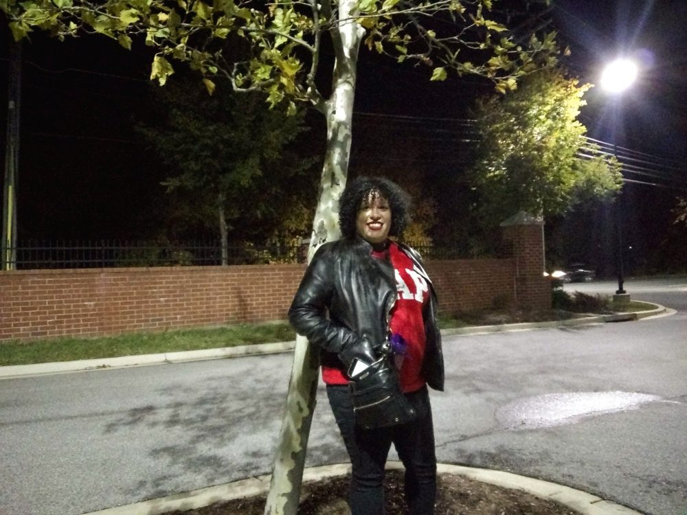

Horus Alas is a reporter and digital designer based near Washington, D.C.
Horus has covered the Supreme Court, Maryland's Congressional delegation, and the 2019 impeachment investigation.
Steny Hoyer sees experience as his advantage
Former adviser tells impeachment inquiry Trump envoy was on ‘domestic political errand’
Briana Urbina’s pitch to Maryland’s 5th Congressional District: go younger
At Brookings talk, Van Hollen calls for “quiet diplomacy,” strategic partnerships
Horus' digital designs include journalistic stories with interactive graphics, product demos, a New York Times Style section mockup, and more.

H
orus Alas is a writer, reporter, copyeditor and digital designer
based in the Washington, D.C. area.
His reporting has covered Maryland's congressional delegation, federal appropriations, impeachment, and the Supreme Court. Horus also thrives reporting on feature and enterprise stories highlighting the human element within larger events.
As a designer, he engages the user with streamlined features and interactive graphics that propel a story. Horus' pages provide a crisp backdrop for journalistic stories and product demos.
Horus has edited web content for NASA's Glenn Research Center in Cleveland, Ohio, and written for Capital News Service, the Diamondback and the Frederick News-Post.
He completed a master's degree in journalism at the University of Maryland in December 2019. Horus previously earned a bachelor's degree in philosophy from the same university, and is a native Spanish speaker with backgrounds in Latin, French and Italian.